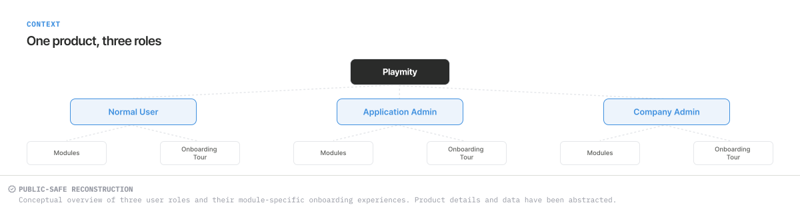
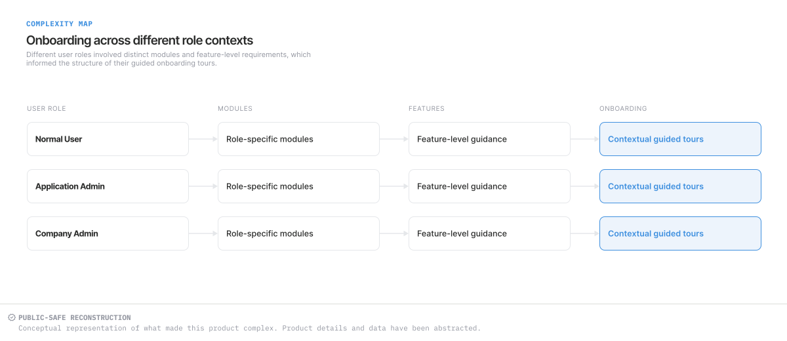
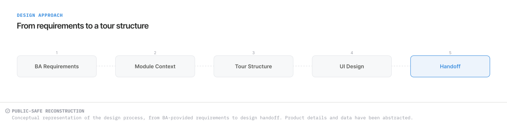
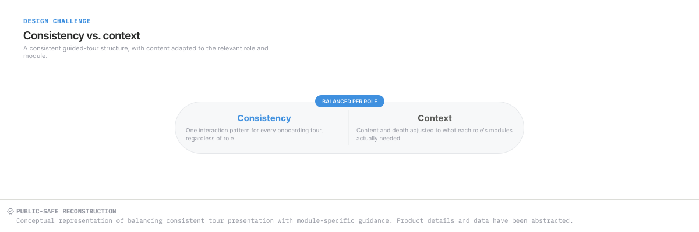
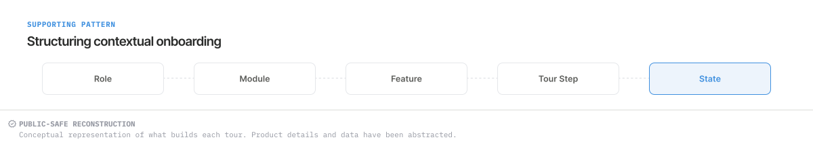
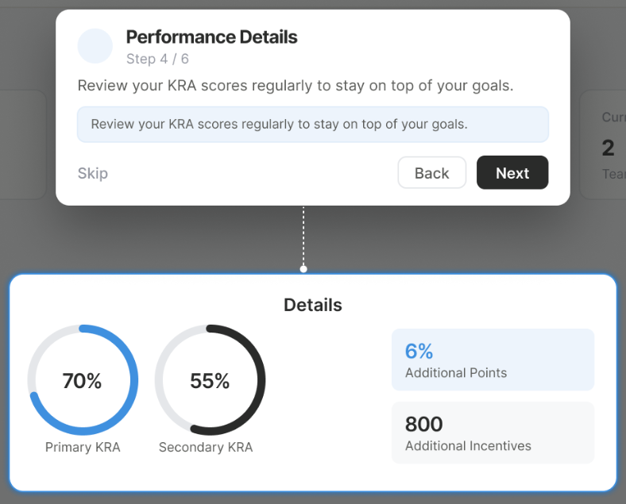

CASE STUDY · GAMIFIED PWA
Playmity
Guided onboarding tours shaped around module context.
Professional context: work undertaken during my employment at Paramatrix Technologies Limited. These independently recreated, conceptual visuals use abstracted product details and fictional data; they are not original product screenshots.
Explain the feature where it appears.
Guided tours bring short, sequenced explanations into the existing interface. The design challenge was to keep that guidance consistent while making each step relevant to its module.
Guided onboarding tours
I designed tours for assigned modules using BA-provided requirements. My contribution covered step sequencing, presentation, contextual guidance and consistency between tour experiences.
The wider application and its product requirements were team work; I did not independently design the complete product.
View the Performance Details tour ↓01 · PRODUCT CONTEXT
One product, different role and module contexts.
Playmity is a gamified Progressive Web App with multiple user roles and modules. Onboarding guidance sits within that wider experience, helping explain the interface in the context of an assigned task or feature.


02 · WORKFLOW COMPLEXITY
Consistent guidance needs a specific context.
Multi-role, multi-module products bring different content into each tour. The sequence needs to reflect the relevant feature while retaining a recognisable presentation and control pattern.
Role, module and feature provide the context for a tour step. The diagram is a way to organise that thinking, rather than a specification for routing or permission behaviour.


03 · MY ROLE & APPROACH
From BA requirements to guided-tour presentation.
The Business Analyst supplied feature-level requirements through an Excel sheet. I used those requirements to understand the relevant features and translate them into structured, module-specific guided-tour designs.
My UX/UI contribution covered step sequencing, presentation, contextual guidance and consistent interaction patterns. I delivered the designs for implementation by the development team.


04 · DESIGN CHALLENGE
Keep the pattern familiar and the explanation relevant.
A consistent tour presentation can provide a familiar way to move through guidance. The wording and emphasis still need to fit the feature being explained. My design contribution addressed both the common presentation and the context of individual steps.


05 · DESIGN DECISIONS
A focused step within a wider interface.
The selected Performance Details reconstruction makes four presentation decisions visible.
Focus attention on one area
The bright Details panel stands out against the dimmed surrounding interface. The tour explanation connects directly to that highlighted region.
See the tour detail ↓Make the step identifiable
Performance Details names the topic and Step 4 / 6 places it within a sequence. The visible count describes this reconstruction only.
See the tour detail ↓Separate navigation choices
Next has the strongest emphasis, Back is secondary and Skip remains visible. Each control has a distinct visual role.
See the tour detail ↓Keep the explanation beside its context
The connector links the overlay to the Details panel. The screen remains visible so the explanation can be read in relation to the interface.
See the tour detail ↓

06 · SELECTED INTERFACE
Performance Details guided tour.


Guidance anchored to the feature.
- Direct attention
The Details panel stays bright while the surrounding interface is subdued.
- Communicate the current step
Performance Details names the topic; Step 4 / 6 locates it within the illustrated tour.
- Distinguish the actions
Next has the strongest emphasis, Back is secondary and Skip remains visible.
- Keep the context close
The connector places the explanation in direct relation to the highlighted feature.
07 · DESIGN TO IMPLEMENTATION
Guided-tour designs implemented by the team.
Feature-level requirements supplied by the Business Analyst informed the guided onboarding experiences. I translated those requirements into structured, module-specific tour designs with consistent interaction patterns. The guided tours were subsequently implemented by the development team during my employment at Paramatrix Technologies.
08 · REFLECTION
Guidance works through relevance and restraint.
Sequence the explanation.
A tour needs a deliberate reading order, with each step focused on a recognisable part of the interface.
Keep the context visible.
Guidance is more concrete when the feature being explained remains visible beside the explanation.
Reuse the presentation carefully.
Consistent controls and hierarchy can connect tour experiences while leaving room for module-specific content.